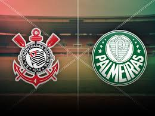

O Corinthians foi fundado em 1910 por operários do bairro Bom Retiro, em São Paulo. O clube nasceu como “time do povo”.
O nome “Corinthians” foi inspirado no clube inglês Corinthian F.C., que fez uma excursão pelo Brasil no começo do século XX.
O primeiro uniforme do Corinthians não era preto e branco: era creme. Depois a cor mudou porque o tecido desbotava facilmente.
O mascote do clube é o Mosqueteiro, símbolo de garra e coragem. A inspiração veio da história dos “Três Mosqueteiros”.
A torcida do Corinthians é chamada de “Fiel Torcida” porque continuou apoiando o clube mesmo durante um jejum de títulos de mais de 20 anos, entre 1954 e 1977.
O clube foi fundado em 1910 por um grupo de trabalhadores do bairro do Bom Retiro, em São Paulo. Diferente dos clubes elitizados da época, o Corinthians nasceu com identidade popular.
O mascote oficial é o Mosqueteiro, inspirado nos personagens de “Os Três Mosqueteiros”,
simbolizando coragem, união e lealdade.
Em 2012, o Corinthians venceu o Mundial de Clubes da FIFA 2012 derrotando o Chelsea F.C. por 1 a 0, com gol de Paolo Guerrero. O time terminou o torneio sem sofrer gols.
nos anos 1980, jogadores como Sócrates, Wladimir e Casagrande lideraram a chamada
Democracia Corinthiana, movimento em que jogadores participavam das decisões do clube — algo raro no futebol da época.
⚔️ Corinthians x Palmeiras — Derby Paulista
A maior rivalidade do clube é contra o Sociedade Esportiva Palmeiras.
Curiosidades:
O confronto é chamado de Derby Paulista.
A rivalidade começou ainda no início do século XX.
Já decidiram vários campeonatos importantes.
Um dos episódios mais marcantes foi o título paulista do Corinthians em 1995 em cima doPalmeiras de Edmundo.
Também houve polêmicas históricas, brigas e provocações entre torcidas.
🔥 Corinthians x São Paulo — Majestoso
Contra o São Paulo Futebol Clube o clássico é conhecido como Majestoso.
Curiosidades:
O nome foi criado pelo jornalista Thomaz Mazzoni.
O Corinthians demorou muitos anos para vencer no antigo estádio do Morumbi.
Em 2017, o Corinthians quebrou um tabu importante vencendo no Morumbi pelo Brasileirão.
⚓ Corinthians x Santos — Clássico Alvinegro
O duelo com o Santos Futebol Clube é chamado de Clássico Alvinegro.
Curiosidades:
Ficou mundialmente famoso na época de Pelé.
Nos anos 2000 e 2010 teve muitos confrontos decisivos.
A semifinal da Libertadores de 2012 foi uma das mais históricas para o Corinthians.
| Item | Informação |
|---|---|
| Time | Corinthians |
| Fundação | 1910 |
| Estádio | Neo Química Arena |